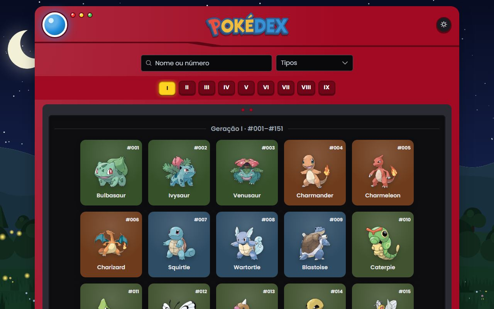
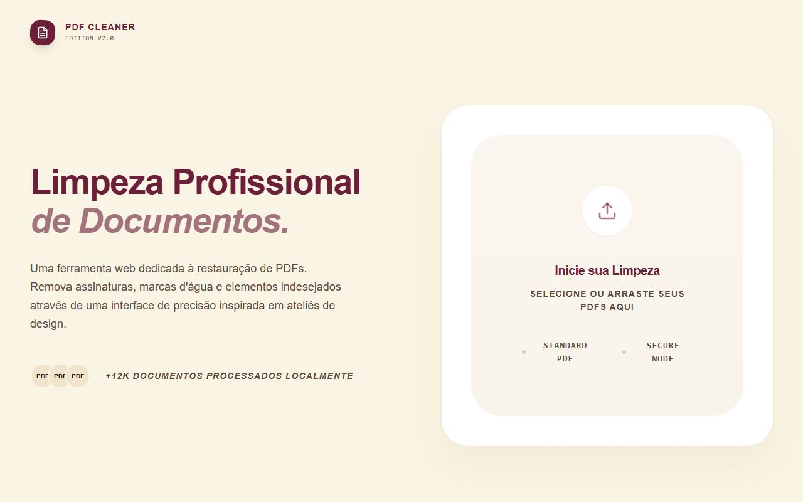
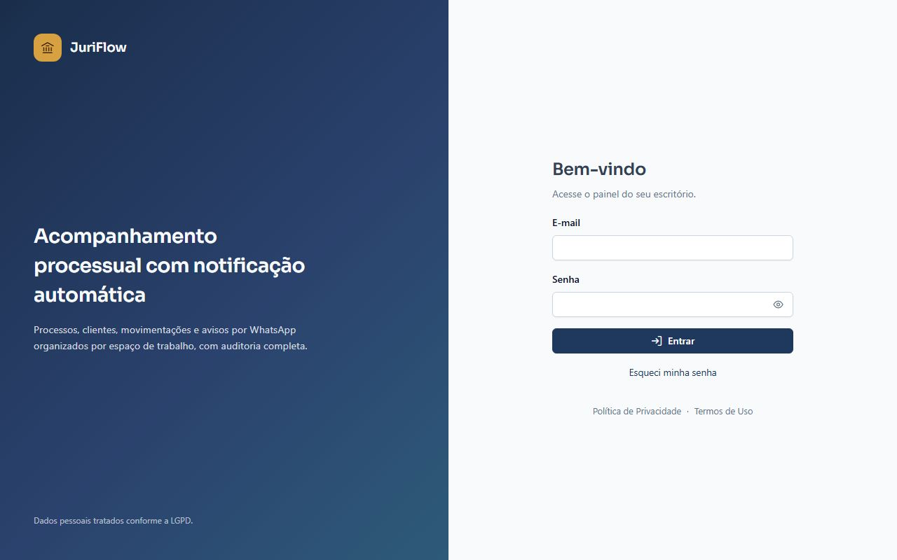

Formação em Engenharia Civil e técnico em Construção de Edifícios pelo IFAM. Em 2022, a troca do canteiro de obras pelo código, com o estágio de desenvolvimento na Polícia Militar do Amazonas. Desde então, software virou profissão.
exp.anos
4+ anos
desenvolvendo front e back em produção, desde 2022
changeover.atividades
60+ atividades
monitoradas por changeover no sistema da Foxconn, com alerta automático via WhatsApp
e2e.duracao
20segundos
para validar um fluxo com Playwright, contra 2–3 min no teste manual
taurus.empresas
4empresas
usando o ERP Taurus em produção, com as equipes de cada uma operando compras e estoque no dia a dia
01
sobre.md
Da engenharia civil para o código.
// primeiro descobre onde quebra, depois entrega
const carlos = {
perfil: "Full Stack",
origem: "Engenharia Civil",
desde: 2022,
front: ["Angular", "TypeScript"],
back: ["Spring Boot", "FastAPI"],
dados: ["PostgreSQL", "Kafka"],
testes: ["Playwright", "K6"],
};Da engenharia veio o hábito de perguntar onde uma estrutura cede antes de construí-la. No software, isso virou teste: cada funcionalidade vem acompanhada dos cenários que tentam quebrá-la, com Playwright e K6, e dos resultados acompanhados no Grafana. Tela, API, banco e teste pensados juntos, desde o início.
02
carreira.log
Experiência profissional
Cada barra mostra o período em cada empresa. Clique num cargo para ver os detalhes.
-
Desenvolvedor Full-Stack Foxconn 05/2025 → 09/2026
- Desenvolveu funcionalidades full stack de um sistema de gestão de changeover (troca de linha de produção) distribuído em vários repositórios (backend, frontend, integração e WhatsApp/WAHA), com Spring Boot (Java/Kotlin), Hibernate/JPA, Angular, SQL Server e Docker.
- Conduziu a refatoração e o desacoplamento de um sistema legado, padronizando design, regras de negócio e fluxos.
- Integração orientada a eventos com Apache Kafka: alterações no SQL Server (capturadas via triggers) são publicadas em tópicos e processadas por consumers/workers no backend Spring Boot, desacoplando o banco da aplicação.
- Deu visibilidade a gargalos que antes passavam batido: o sistema monitora mais de 60 atividades por changeover e dispara alerta automático via WhatsApp (WAHA) quando o tempo previsto de uma atividade estoura.
- Estruturou a automação de testes do zero: cerca de 10 cenários E2E críticos em Playwright/TypeScript com Page Object Model, reduzindo a validação de cada fluxo de aprox. 2–3 min manuais para aprox. 20s na UI e 3s na API.
- Testes de carga com K6 revelaram aprox. 30% de timeouts em requisições sequenciadas, causados por uma VM de teste subdimensionada, identificando o problema antes da produção.
- Ambientes de teste containerizados com Docker, CI/CD no GitLab com deploy semi-automatizado, dashboards de qualidade em Grafana/InfluxDB, documentação em XWiki e code reviews em time Scrum.
Spring Boot · Kotlin · Hibernate/JPA · Angular · SQL Server · Apache Kafka · Docker · GitLab CI/CD · WAHA · Playwright · K6 · Grafana
-
Desenvolvedor Full-Stack Projex Consulting 02/2024 → 05/2025
- Desenvolveu módulos do Taurus, ERP em produção em 4 empresas e usado no dia a dia pelas equipes de cada uma: módulo de compras (compara descontos por produto e por combo e aponta a opção mais vantajosa) e módulo de estoque.
- Colocou em produção a exibição de fotos de ordens de serviço: um carrossel com Angular definindo o comportamento conforme a orientação da imagem (pausa e rotação de fotos em paisagem) e CSS (transforms e animações) para transições com efeito de profundidade, conforme spec do cliente.
- Construiu uma aplicação de leilão com lances em tempo real via WebSocket e Spring Boot, refletindo cada lance para todos os participantes conectados.
- Front em Angular, PrimeNG e PrimeFlex; back em FastAPI (Python) e Spring Boot (Java/Kotlin) com Hibernate/JPA sobre PostgreSQL. Kanban, code reviews e versionamento no Bitbucket.
Angular · PrimeNG · PrimeFlex · Spring Boot · Kotlin · FastAPI · Hibernate/JPA · PostgreSQL · WebSocket
-
Estagiário de Desenvolvimento de Software Projex Consulting 01/2024 → 02/2024
- Construiu um dashboard interativo em Angular, TypeScript e Chart.js (dados mockados).
- A qualidade da entrega levou à efetivação como desenvolvedor em cerca de 20 dias. Kanban, entregas incrementais.
Angular · TypeScript · Chart.js
-
Estagiário de Desenvolvimento de Software Polícia Militar do Amazonas 05/2022 → 02/2024
- Sistema de cadastro e habilitação de empresas fornecedoras de fardamento, com fluxo de aprovação, em Angular com Firebase como backend completo (autenticação, banco NoSQL e storage), em uso real e com suporte direto aos fornecedores.
- Evolução do front (Angular) e consultas ao banco de dados no backend de um sistema de controle de armamento em produção, com mais de 5.000 armas registradas.
- Sistema de checklist para conferência de patrimônio da corporação (viaturas, lanchas e equipamentos) e o sistema do Boletim Geral da PMAM (publicação oficial da corporação, equivalente a um diário oficial) em Spring Boot, Hibernate/JPA e PostgreSQL, com APIs REST documentadas em Swagger.
- Metodologia Kanban e versionamento no GitHub.
Angular · Firebase · Spring Boot · Hibernate/JPA · PostgreSQL · Swagger · Git
03
skills.json
Mapa de habilidades
Organizado em três níveis: área → tecnologia → ferramenta. Use os botões para abrir os níveis ou clique num item para expandir.
Frontend
- Angular
- TypeScript, PrimeNG, PrimeFlex, Chart.js
- Base web
- HTML, CSS
Backend
- Spring Boot
- Java, Kotlin, Hibernate/JPA, Swagger/OpenAPI
- FastAPI
- Python, Swagger/OpenAPI
Dados
- PostgreSQL
- modelagem, consultas, persistência
- SQL Server
- sistema de changeover
- Firebase
- auth, NoSQL, storage
APIs & arquitetura
- REST + WebSocket
- tempo real, Swagger/OpenAPI
- Apache Kafka
- tópicos, consumers/workers
- Clean Code / SOLID
- modular, desacoplado
Testes & qualidade
- Playwright
- E2E, Page Object Model, TypeScript
- K6
- carga e performance
- Postman
- fluxos de API encadeados
DevOps
- Git
- GitHub, GitLab, Bitbucket
- Docker
- ambientes padronizados
- CI/CD
- GitLab Pipelines
Métricas & docs
- Grafana + InfluxDB
- dashboards de qualidade
- XWiki
- documentação e evidências
- WAHA
- integração WhatsApp
Métodos
- Scrum / Kanban
- times ágeis
- Code Review
- padrões de qualidade
Boas práticas
No dia a dia- Clean Code desacoplamento
- SOLID code review
- Orientação a Objetos modelagem
- Page Object Model testes E2E
Arquitetura & entrega
Em produção- REST + WebSocket contratos
- Swagger/OpenAPI documentação
- CI/CD GitLab deploy
- Scrum / Kanban times ágeis
Cursos complementares
5 cursos- 01Desenvolvimento WebJavaScript, TypeScript e Angular
- 02Java e Orientação a ObjetosFundamentos da linguagem
- 03Python para Ciência de DadosIntrodução
- 04Machine LearningPrincípios, com Python
- 05Ethical HackingFundamentos de segurança
04
projetos/
Projetos em destaque
$ ls projetos/pessoais · código aberto

Pokédex
No arPokédex consumindo a PokéAPI com todas as gerações em scroll infinito, busca por nome ou número, filtro por tipo e detalhe em rota própria. Cache em IndexedDB: funciona offline depois da primeira visita.

PDF Cleaner
No arRemove assinaturas digitais, marcas d'água e bordas de PDFs com réguas arrastáveis sobre o documento e preview antes/depois. Processamento 100% no navegador: nenhum arquivo sai da máquina.

JuriFlow
Em construçãoSaaS multi-tenant para escritórios de advocacia acompanharem processos, clientes e movimentações, com aviso automático por WhatsApp e trilha de auditoria. Cada escritório fica isolado com Row Level Security no Postgres, testado com pgTAP.
pipeline
- Coletor Playwright
- Normalizador
- Detector de mudanças
- Motor de regras
- WhatsApp WAHA
- Auditoria
$ ls projetos/profissionais · código privado
01● privado
Sistema de gestão de changeover
Foxconn · 2025 → 2026 · Desenvolvedor Full-Stack
Sistema distribuído em vários repositórios (backend, frontend, integração e WhatsApp/WAHA) para gerir a troca de linha de produção, com Spring Boot, Hibernate/JPA, Angular, SQL Server e Docker. Integração orientada a eventos com Apache Kafka entre o banco e o backend. Deploy semi-automatizado em pipeline GitLab.
impacto
Monitora mais de 60 atividades por changeover e alerta o time via WhatsApp assim que o tempo previsto de uma atividade estoura. Antes, esse gargalo passava despercebido.
Spring Boot · Hibernate/JPA · Angular · SQL Server · Apache Kafka · Docker · GitLab CI/CD · WAHA
02● privado
Automação de testes E2E e de carga
Foxconn · 2025 → 2026 · Desenvolvedor Full-Stack
Suíte criada do zero para um sistema corporativo: cerca de 10 cenários E2E críticos em Playwright/TypeScript com Page Object Model, carga com K6, dashboards em Grafana/InfluxDB e ambientes de teste containerizados com Docker, tudo integrado ao CI/CD.
impacto
Validação de fluxo caiu de aprox. 2–3 min manuais para aprox. 20s na UI e 3s na API; a carga com K6 expôs aprox. 30% de timeouts causados por uma VM de teste subdimensionada, antes de chegar em produção.
Playwright · K6 · TypeScript · Grafana · InfluxDB · Docker · XWiki · Postman
03● privado
Taurus: módulos de compras e estoque
Projex Consulting · 2024 → 2025 · Desenvolvedor Full-Stack
Módulos de um ERP em produção em 4 empresas, usado no dia a dia pelas equipes de cada uma. O módulo de compras compara descontos por produto e por combo e aponta a opção mais vantajosa; inclui carrossel de fotos de ordens de serviço (Angular + CSS) e uma aplicação de leilão em tempo real via WebSocket.
impacto
Código em produção nas 4 empresas, apoiando as equipes de compras e estoque com decisão de compra assistida e atualização de lances em tempo real para todos os participantes conectados.
Angular · PrimeNG · PrimeFlex · Spring Boot · Kotlin · FastAPI · Hibernate/JPA · PostgreSQL · WebSocket
04● privado
Sistemas internos da PMAM
Polícia Militar do Amazonas · 2022 → 2024 · Estágio
Cadastro e habilitação de fornecedores de fardamento (Angular com Firebase como backend completo), evolução do front de um sistema de controle de armamento em produção, checklist de conferência de patrimônio e o sistema do Boletim Geral da PMAM em Spring Boot, Hibernate/JPA e PostgreSQL.
impacto
Sistemas em uso real na corporação, incluindo o de controle de armamento, com mais de 5.000 armas registradas.
Angular · Firebase · Spring Boot · Hibernate/JPA · PostgreSQL · Swagger · Git
05
formacao.yml
Formação acadêmica
- 2021 → 2027 Tecnólogo em Análise e Desenvolvimento de SistemasInstituto Federal do Amazonas · IFAM Em andamento
- 2015 → 2020 Bacharelado em Engenharia CivilFaculdade Martha Falcão · FMF/Wyden Concluído
- 2016 → 2018 Técnico em Construção de EdifíciosInstituto Federal do Amazonas · IFAM Concluído
06
contato.sh
Tem uma ideia guardada? Vamos tirar do papel.
Um sistema para o seu negócio, uma automação que poupa horas da sua equipe, um app que ainda só existe na sua cabeça. A conversa começa pelo seu objetivo: o que precisa funcionar, para quem e por quê. A tecnologia vem depois, a serviço disso.